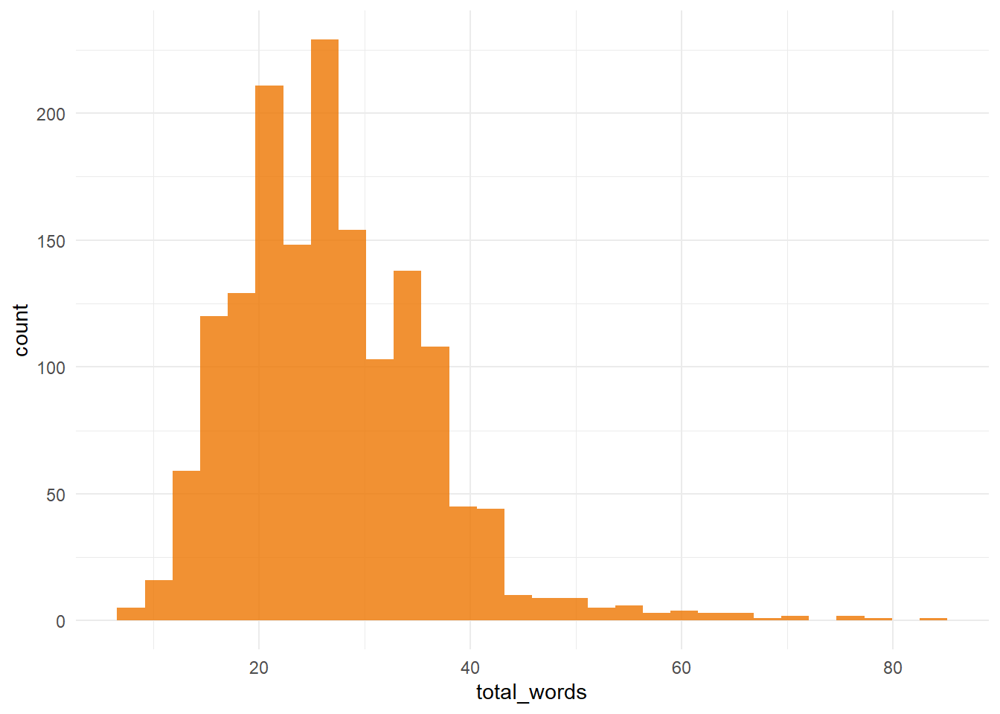
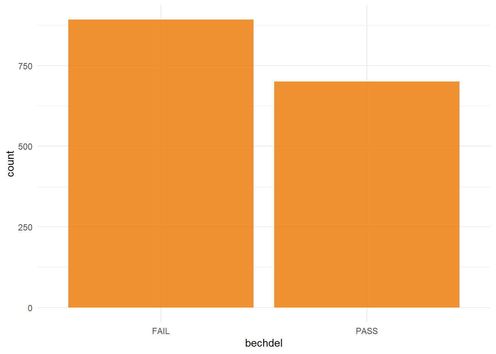
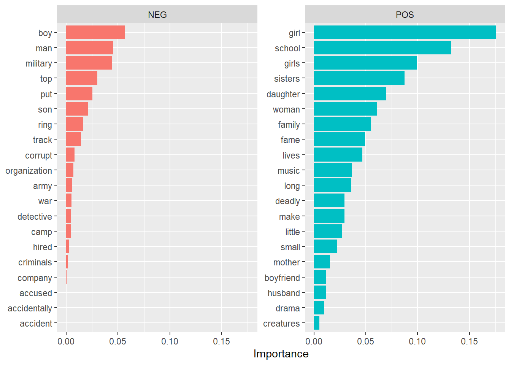

For this analysis, I used a TidyTuesday dataset on the Bechdel test. See here.`
library(tidyverse)## -- Attaching packages --------------------------------------- tidyverse 1.3.0 --## v ggplot2 3.3.3 v purrr 0.3.4
## v tibble 3.1.0 v dplyr 1.0.5
## v tidyr 1.1.3 v stringr 1.4.0
## v readr 1.3.1 v forcats 0.5.1## -- Conflicts ------------------------------------------ tidyverse_conflicts() --
## x dplyr::filter() masks stats::filter()
## x dplyr::lag() masks stats::lag()library(tidytext)
tuesdata <- tidytuesdayR::tt_load('2021-03-09')## --- Compiling #TidyTuesday Information for 2021-03-09 ----## --- There are 2 files available ---## --- Starting Download ---##
## Downloading file 1 of 2: `raw_bechdel.csv`
## Downloading file 2 of 2: `movies.csv`## --- Download complete ---movies <- tuesdata$movies %>%
mutate(bechdel = binary) %>%
select(title, plot, bechdel) %>%
filter(!is.na(plot) & !is.na(bechdel)) %>%
mutate(text = plot) %>%
select(-plot)
# Number of words per movie blurb
movies %>%
unnest_tokens(word, text) %>%
count(title, name = "total_words") %>%
ggplot(aes(total_words)) +
geom_histogram(fill = "darkorange2", alpha = 0.8) +
theme_minimal()## `stat_bin()` using `bins = 30`. Pick better value with `binwidth`.
I also wanted to have a quick look at the balance between the two outcomes (Pass/Fail) to ensure the dataset was relatively well balanced.
# Number of movies that pass/fail
movies %>%
ggplot(aes(x = bechdel)) +
geom_bar(stat = "count", fill = "darkorange2", alpha = 0.8) +
theme_minimal()
prop.table(table(movies$bechdel))##
## FAIL PASS
## 0.5603015 0.4396985It seems there are a few more movies that fail the test, but the split is not too far off 50/50.
First things first, split the data into training and testing dataset, using the default split of 3/4 training and 1/4 testing.
I like using The Answer to the Ultimate Question of Life, the Universe, and Everything a a seed.
library(tidymodels)## -- Attaching packages -------------------------------------- tidymodels 0.1.2 --## v broom 0.7.5 v recipes 0.1.15
## v dials 0.0.9 v rsample 0.0.9
## v infer 0.5.4 v tune 0.1.3
## v modeldata 0.1.0 v workflows 0.2.2
## v parsnip 0.1.5 v yardstick 0.0.7## -- Conflicts ----------------------------------------- tidymodels_conflicts() --
## x scales::discard() masks purrr::discard()
## x dplyr::filter() masks stats::filter()
## x recipes::fixed() masks stringr::fixed()
## x dplyr::lag() masks stats::lag()
## x yardstick::spec() masks readr::spec()
## x recipes::step() masks stats::step()set.seed(42)
review_split <- initial_split(movies, strata = bechdel)
review_train <- training(review_split)
review_test <- testing(review_split)Next, I made use of the amazing
library(textrecipes)
library(stopwords)
review_rec <- recipe(bechdel ~ text, data = review_train) %>%
step_tokenize(text) %>%
step_stopwords(text) %>%
step_tokenfilter(text, max_tokens = 500) %>%
step_tfidf(text) %>%
step_normalize(all_predictors())
review_prep <- prep(review_rec)
review_prep## Data Recipe
##
## Inputs:
##
## role #variables
## outcome 1
## predictor 1
##
## Training data contained 1194 data points and no missing data.
##
## Operations:
##
## Tokenization for text [trained]
## Stop word removal for text [trained]
## Text filtering for text [trained]
## Term frequency-inverse document frequency with text [trained]
## Centering and scaling for tfidf_text_accident, ... [trained]lasso_spec <- logistic_reg(penalty = tune(), mixture = 1) %>%
set_engine("glmnet")
lasso_wf <- workflow() %>%
add_recipe(review_rec) %>%
add_model(lasso_spec)
lasso_wf## == Workflow ====================================================================
## Preprocessor: Recipe
## Model: logistic_reg()
##
## -- Preprocessor ----------------------------------------------------------------
## 5 Recipe Steps
##
## * step_tokenize()
## * step_stopwords()
## * step_tokenfilter()
## * step_tfidf()
## * step_normalize()
##
## -- Model -----------------------------------------------------------------------
## Logistic Regression Model Specification (classification)
##
## Main Arguments:
## penalty = tune()
## mixture = 1
##
## Computational engine: glmnetYou may need the development version of recipes for this to work, as per this issue
lambda_grid <- grid_regular(penalty(), levels = 40)
set.seed(42)
review_folds <- bootstraps(review_train, strata = bechdel)
review_folds## # Bootstrap sampling using stratification
## # A tibble: 25 x 2
## splits id
## <list> <chr>
## 1 <split [1194/440]> Bootstrap01
## 2 <split [1194/445]> Bootstrap02
## 3 <split [1194/437]> Bootstrap03
## 4 <split [1194/447]> Bootstrap04
## 5 <split [1194/443]> Bootstrap05
## 6 <split [1194/446]> Bootstrap06
## 7 <split [1194/434]> Bootstrap07
## 8 <split [1194/435]> Bootstrap08
## 9 <split [1194/454]> Bootstrap09
## 10 <split [1194/436]> Bootstrap10
## # ... with 15 more rowsdoParallel::registerDoParallel()
set.seed(2020)
lasso_grid <- tune_grid(
lasso_wf,
resamples = review_folds,
grid = lambda_grid,
metrics = metric_set(roc_auc, ppv, npv)
)
lasso_grid %>%
collect_metrics()## # A tibble: 120 x 7
## penalty .metric .estimator mean n std_err .config
## <dbl> <chr> <chr> <dbl> <int> <dbl> <fct>
## 1 1.00e-10 npv binary 0.498 25 0.00580 Preprocessor1_Model01
## 2 1.00e-10 ppv binary 0.616 25 0.00536 Preprocessor1_Model01
## 3 1.00e-10 roc_auc binary 0.578 25 0.00424 Preprocessor1_Model01
## 4 1.80e-10 npv binary 0.498 25 0.00580 Preprocessor1_Model02
## 5 1.80e-10 ppv binary 0.616 25 0.00536 Preprocessor1_Model02
## 6 1.80e-10 roc_auc binary 0.578 25 0.00424 Preprocessor1_Model02
## 7 3.26e-10 npv binary 0.498 25 0.00580 Preprocessor1_Model03
## 8 3.26e-10 ppv binary 0.616 25 0.00536 Preprocessor1_Model03
## 9 3.26e-10 roc_auc binary 0.578 25 0.00424 Preprocessor1_Model03
## 10 5.88e-10 npv binary 0.498 25 0.00580 Preprocessor1_Model04
## # ... with 110 more rowsbest_auc <- lasso_grid %>%
select_best("roc_auc")
best_auc## # A tibble: 1 x 2
## penalty .config
## <dbl> <fct>
## 1 0.0289 Preprocessor1_Model34final_lasso <- finalize_workflow(lasso_wf, best_auc)
final_lasso## == Workflow ====================================================================
## Preprocessor: Recipe
## Model: logistic_reg()
##
## -- Preprocessor ----------------------------------------------------------------
## 5 Recipe Steps
##
## * step_tokenize()
## * step_stopwords()
## * step_tokenfilter()
## * step_tfidf()
## * step_normalize()
##
## -- Model -----------------------------------------------------------------------
## Logistic Regression Model Specification (classification)
##
## Main Arguments:
## penalty = 0.0289426612471674
## mixture = 1
##
## Computational engine: glmnetlibrary(vip)##
## Attaching package: 'vip'## The following object is masked from 'package:utils':
##
## vifinal_lasso %>%
fit(review_train) %>%
pull_workflow_fit() %>%
vi(lambda = best_auc$penalty) %>%
group_by(Sign) %>%
arrange(desc(abs(Importance))) %>%
slice(1:20) %>%
ungroup() %>%
mutate(
Importance = abs(Importance),
Variable = str_remove(Variable, "tfidf_text_"),
Variable = fct_reorder(Variable, Importance)
) %>%
ggplot(aes(x = Importance, y = Variable, fill = Sign)) +
geom_col(show.legend = FALSE) +
facet_wrap(~Sign, scales = "free_y") +
labs(y = NULL)
review_final <- last_fit(final_lasso, review_split)
review_final %>%
collect_metrics()## # A tibble: 2 x 4
## .metric .estimator .estimate .config
## <chr> <chr> <dbl> <fct>
## 1 accuracy binary 0.606 Preprocessor1_Model1
## 2 roc_auc binary 0.615 Preprocessor1_Model1review_final %>%
collect_predictions() %>%
conf_mat(bechdel, .pred_class)## Truth
## Prediction FAIL PASS
## FAIL 209 143
## PASS 14 32